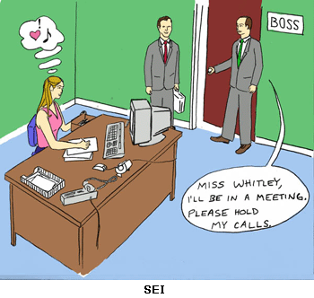

Table of Contents
| 1 | Learning about Interrupts | |
| 1.1 | Introduction | |
| 1.2 | Scenarios Where Interrupts are Useful | |
| 1.3 | Getting to the Nuts and Bolts | |
| 1.4 | Setting Up an Interrupt | |
| 2 | Special Types of Interrupts | |
| 2.1 | NMI: Non-Maskable Interrupt | |
| 2.2 | BRK: Software Interrupt | |
| 2.3 | WAI: Faster Interrupt Service on the 65C02 | |
| 3 | Sample Applications | |
| 3.1 | Interrupt Support for RS-232 Receive | |
| 3.2 | Interrupt-Driven Arbitrary Waveform Generator | |
| 3.3 | Simple Analog Output from the 6522's Serial Port |
Appendix A: Interrupt Performance
Forum posts indicate that many members are uncomfortable with interrupts or even misunderstand why they are used. This primer was written to help with basic interrupt understanding and how to implement interrupts on 6502 systems, without getting into too much detail of individual hardware setups.
For further reading, see the Synertek programming manual on 6502.org or at http://users.telenet.be/kim1-6502/6502/proman.html, pages 129-146. These two locations have the same thing in different forms. Then there's WDC's outstanding programming manual which I can't pass up an opportunity to recommend. Virtually all programming manuals will give some treatment to interrupts. What I have tried to additionally provide here is:
Interrupt-Service Routines (ISRs, also called "interrupt handlers") can range from very simple to very complex. Many things can be done with hardware prioritizing of interrupts, interrupt handling in high-level languages, and other things that have not been mentioned here. This is only intended to be a primer, not an exhaustive resource. For the beginner, it could become very difficult to follow more of these things without getting away from the subject of interrupts and giving a lot of attention to other issues of hardware and systems that have little relevance to the reader's application.
If you have more questions about interrupts, or if you find anything questionable, inaccurate, or confusing in this primer, please contact me. I can usually get back to you within a few hours. I will be happy to help further if I can, and I definitely would want to correct any errors anyone might find here.
Garth Wilson
1.2 SCENARIOS WHERE INTERRUPTS ARE USEFUL
Consider some scenarios:
Scenario A: Suppose you have data bytes coming to the computer via a serial port, possibly through a 6551 ACIA. Further, suppose that servicing the port does not take as much time as there is between bytes coming in. Further, suppose that there are occasional pauses of unpredictable duration in the data.
Here's a slightly more productive way to stay on top of the job of reading the data from the serial port and getting the port ready to accept the next byte. You can have a program running that does something else useful but keeps checking back with the port (ie, polling it) periodically to see if the next byte has finished coming in yet. This would probably be done in a subroutine that gets called at different places in the main program. If a byte has finished coming in, the subroutine branches to where it services the port. When the subroutine ends, execution resumes in the main program at the instruction following the subroutine call (ie, the instruction following the JSR). This method still does not make the best use of processor time, and requires that the main program have the JSR's to poll the port sprinkled possibly throughout much of the program.
The much better way to handle the situation uses interrupts. Set the serial port up to tell the processor when it needs attention. Then the background program doesn't need to be written with anything special to poll the port, and the port will get serviced without having to wait for the background program to get to one of the subroutine calls to poll the port. (An actual coding example of this will be given near the end.)
The much better way to handle the situation uses interrupts. Use an IC with a timer implemented in hardware. Set it up to roll over every so many milliseconds or microseconds as the job requires, and to tell the processor when it rolls over. The timer's roll-over rate will remain at whatever value your program gave it, regardless of what the processor is doing. That means that the interrupts will be perfectly spaced and timed regardless of how long it takes the processor to do what it's supposed to do each time the timer rolls over (assuming the interrupt-service job is done before the next roll-over).
A benefit of using the interrupts is that now it won't matter what other job the processor is doing while the timer is running. The processor can be busy doing something else productive until the timer "blows the whistle," so to speak. By the way, if the timer's hardware limitations make it unable to go long enough between roll-overs, you can set your interrupt-service routine (ISR) to count roll-overs and then do the job every so many roll-overs. (The first coding example later will deal with a similar case, although the job will only be to increment a two-byte variable, using it only to mark elapsed time for other routines to refer to.)
If you look at one scenario or another by itself, the job might even appear possible without interrupts. As soon as you get two or more such scenarios at once, it quickly becomes impossible. Interrupts become imperative. Fortunately, they're pretty easy on the 6502.
Here are some analogies to everyday life, suitable even for the computer-illiterate. The perfect illustration I read in a book (and I don't remember where anymore) used the doorbell for comparison. Suppose you knew one or more guests could be arriving at the door. Polling would be like going to the door often to see if someone was there yet. The analogy with the serial port is to have your program keep asking, "Do you have another data byte yet?" and the answer comes back, "no." Then again "Do you have another data byte yet?" "No." "Do you have..." The better way is for the processor to tell the port, "Ok, let me know when you do," and then quit asking, and go about its business doing something productive.
That's what the doorbell is for. The guests are coming, but you have preparations to make, or maybe something unrelated that you need to do. You go about your business. You only go to the door when the doorbell rings, and the guests are not left waiting for the next time you decide it's time to check the door again. You get more done, and they get quicker response when they ring the doorbell. It works out better for everyone.
The alarm clock is an even more relevant analogy. Without it, you could not sleep soundly and restfully and still make sure you meet your morning obligations. Either you watch the clock for the last few hours of the night (whether that means getting up early or simply lying there making sure you don't fall asleep again), or you risk being late for work or other appointment. (Actually the 65C02 and 65816 do have a WAIt instruction to stop the processor and make it wait for an interrupt. This makes the processor able to respond to the interrupt more quickly because it will not have any instructions in progress that must be finished first. These processors also have a SToP instruction. These might compare to sleeping, so the alarm clock analogy becomes all the more relevant.)
An interrupt is not when you decide to take a break from your work. If you're going through the mail and get to a bill and get up to get the check book, that is not analogous to the interrupt, but rather to a branch taken on the basis of what you found in the task you were busy with. There was nothing from the outside that caused you to put down your work and go do something else. Now if you're going through the mail and you hear crying from the back yard because one of your kids got hurt, you put down what you're doing, (hopefully) remembering where you were so you can later pick up again where you left off, and go see what happened. After taking care of the interrupt, however serious or minor it may have been, you return to what you were doing. The only difference it made to the original task was the small delay introduced. Nothing in that original task contained a note telling you to go check the back yard every so often.
Nor is an interrupt when you notice it's time to take lunch. You polled the clock, and compared the time it told you to what time you planned to take a lunch break, and made a decision based on the outcome of the comparison. As the time draws closer, you might "poll" it more and more often. On the other hand, if a bell at work told you it was time for lunch, that would be analogous to the interrupt. You would definitely notice, even if you weren't thinking about it.
An interrupt is not something the program does when it reaches a certain point. (The exception would the BRK instruction, discussed only briefly later on.) I mention this because some on the forum have talked about doing this kind of thing, not understanding what interrupts are or what they are for. If you want to do something at the end of a loop, fine-- have the program execute it directly or call a subroutine that does it. Interrupts by nature are asynchronous events. You generally don't know where the program pointer will be when an interrupt hits.
Can an interrupt interrupt another interrupt? Sure. Suppose you get out to the yard just about the time little Suzie quits crying, and you see that as usual, it was nothing serious. A Band-Aid would be good just to make her feel like you care; but while you're out there, the phone rings. The phone is seldom important, but it is urgent. Hopefully it's not your wife at the supermarket with a car that won't start. Maybe it's that new customer ready to place a large order that will give your home business a big boost. You don't want him to get the answering machine, so you run in and answer. If it was before the national do-not-call list went into effect, it might have been someone trying to sell you double-pane windows, paint your house, or switch your long-distance service, so you hang up on them (but not before telling them never to call again. Fortunately that's one interrupt we're able to mask through the do-not-call list now since 10/1/03.) Now you get back to Suzie's Band-Aid, finish that up, and then get back to the mail.
1.3 GETTING TO THE NUTS AND BOLTS
The routine that services the interrupt is called the interrupt-service routine, or "ISR" for short. Sometimes it is also called an interrupt handler. This routine is written like any other, with one exception. Since it can get called at virtually any time, it must remain invisible to the main program. Whatever computer resources it needs to borrow to do its job, it must put back exactly the way it initially found them. It may have an effect on the main program, but it should not cause erroneous operation by pulling a stunt like changing a status flag immediately before the main program was going to use it to decide whether or not to branch, or changing the value in an index register immediately before the main program was going to use it to get a data byte from the desired location. If the ISR borrows a register for use, it must, when it's done, return it to the way it found it. It's not just the courteous thing to do-- it's the only way to keep the computer from crashing as soon as the ISR finishes.
Fortunately, the 6502 automatically takes care of part of this. It puts the return address onto the stack in page 1, and unlike some other processors, also saves the processor status register P on the stack. When a peripheral device needs service and pulls the interrupt request (IRQ) line low, the currently executing machine-language instruction is allowed to finish, and the 7-clock interrupt sequence is started. This sequence is like the execution of an instruction that was not written into the program, but implicitly inserted by the fact that the IRQ line was pulled down to a logic-low level. The interrupt sequence takes two clocks for internal operations, two to push the return address onto the stack, one to push the processor status register, and two more to get the ISR's beginning address from $FFFE-FFFF (for IRQ) or $FFFA-FFFB (for NMI)-- in that order.
Other things are done during the interrupt sequence beyond what is shown in Figure 1. It is important for the programmer to note that the interrupt-disable I flag is set, and that the decimal D flag is cleared on the 65C02 but not affected on the NMOS 6502. If you have an NMOS 6502 and do hex arithmetic in the ISR, you will need to use CLD if there is any chance the program was interrupted at a point where the D flag was set.
The interrupt sequence pushes three bytes onto the stack. First is the high byte of the return address, followed by the low byte, and finally the status byte from the P processor status register.
Remember that on the 6502, the stack grows down toward $100, and the stack pointer register S is decremented immediately after each byte is written onto the stack, regardless of which instruction or interrupt condition is producing the stack pushes. For example, if stack pointer register S contained $EE, the interrupt sequence will put the return address high byte into $1EE, the low byte into $1ED, and the status byte into $1EC, finally leaving S with $EB. When a byte is pulled off the stack, the stack pointer is incremented before the byte is read.
As a parenthetical note, we should mention that the interrupt sequence does not push the return address the same way that JSR does. The JSR does not push exactly the address where the execution should be resumed, but rather the address of the last byte of the three-byte JSR instruction. The RTS instruction at the end of a subroutine must take the address off the stack and increment it before picking up the next instruction. However, the RTI at the end of an ISR does not need to do this incrementing. In other words, PLP RTS is not just a longer way to do RTI. It would actually land you at a different address-- the one after RTI would have taken you to.
The ISR's execution is ended when the RTI instruction (ReTurn from Interrupt, op code $40), is encountered. After executing the RTI, the processor immediately picks up where it left off in the job it was doing before the interrupt. RTI takes 6 clocks and does the reverse process to put the program counter and the processor status register back. The ISR's RTI is similar to the subroutine's RTS. The primary difference is that RTI restores the status register P too, not just the address to get back to.
RTI's 6-clock process is the reverse of the interrupt sequence. In the first clock, the RTI (op code $40) is read. The next two clocks are used for internal operations, the fourth for pulling the processor status off the stack, the fifth for pulling the low return address byte off the stack, and the sixth for pulling the high return address byte off the stack. In the very next clock, the op code at the return address is read and the non-interrupt execution resumes.
The interrupt latency on the 6502 is definitely one of the very fastest in the 8-bit world. The interrupt sequence takes 7 clocks and the RTI takes 6, so the overhead is only 13 clocks. Remember that this includes saving and restoring the status register, so you don't have to do that in the ISR. Some comparison of other processors' interrupt performance will be made later. We will also present a little trick afforded by WDC's modern 65C02 which, under special circumstances, allows the interrupt service to be delayed by no more than one clock after the IRQ line goes down, instead of the usual 7 to 14 clocks!
If your ISR uses other registers, it will need to save and restore them. If the accumulator is used, you will need to have PHA
(PusH Accumulator) early in the routine, and PLA (PulL Accumulator) somewhere right before the RTI. The CMOS 6502 (65C02) can
directly push and pull the X and Y index registers with instructions PHX, PLX, PHY, and PLY. If you're using the NMOS 6502, you
won't have those instructions available and will have to do a work-around. Pushing X on the stack requires using A, so you have
to push A first to avoid permanently losing its value (whether your ISR needs A or not), then transfer X to A with TXA, and do
another PHA. Pulling it off the stack is the reverse, using PLA and TAX, before restoring the original A with PLA again right
before exiting the ISR.
If the ISR needs a variable that the main program might also need, you will have to save that as well. LDA
So suppose your ISR needs to use A and X. It will need:
Now I must mention a hardware consideration here. The ISR above first tells the VIA that it can quit asserting the interrupt.
There's a reason for doing this first. Most of the 65-family I/O ICs have open-drain IRQ outputs, intended to be connected to
each other and to the processor's IRQ input. Any of the I/O ICs can pull the line low, but the only way it will go up is with a
pull-up resistor pulling the line up to the positive power supply voltage. The recommended resistor value is usually 3K.
Well, since the IRQ line has some amount of capacitance to ground and other nets, that capacitance multiplied by the pull-up
resistor value gives you a time constant. If you put the IRQ-clearing instruction(s) at the end of the ISR, it's possible that
there won't be enough time for the resistor to charge that capacitance up to a valid logic-high state before the RTI is done
executing. The result will be that as soon as the ISR is done and the old status register flags are restored with the
interrupt-disable bit clear once again, the processor is again open to handle another interrupt, so it will respond to the
still-low IRQ line because the IRQ has not had enough time to float back up. Remember the rise time with the resistor is much
slower than totem-pole-type logic outputs. If you only have one interrupt source on the IRQ line, a 3K pull-up resistor, and
only 1MHz clock speed, you can normally get away with clearing the interrupt near the end so you don't need to worry about it;
but turn up the clock speed and put more IRQ sources on the line, etc., and you can get into trouble. I mention it because I've
been bit by it.
While most 65-family I/O ICs have open-drain IRQ outputs, WDC's 65C22 VIA (Versatile Interface Adapter) does not. That means
that to feed more than one WDC 65C22's IRQ output into the processor's IRQ input, you'll need an AND gate arrangement, so that
if any one of the IRQ's goes low, the processor's IRQ input is taken low. The AND gate may make for more parts, but the faster
resulting rise time takes care of the potential problem mentioned above, especially with their faster processor speeds of 10MHz
and higher.
You may have already thought of the question of how to know which device caused the interrupt if several are connected to the IRQ
line at once. Well, no chip capable of generating an interrupt will do so without your program having set it up to do it; so
you already know that an interrupt will not have come from a chip that your program didn't set up to generate interrupts. If
that still leaves two or more chips that could have caused an interrupt, we do what is called "polling". This is not the same
kind of polling we talked about earlier, analogous to checking the door frequently to see if someone was there. This one is more
like having a doorbell that sounds the same whether the button was pushed at the front door or at the back door. You might
choose to first check the door that's most likely to have someone ringing the doorbell. Alternately, you might choose to start
by checking the one most urgent to answer. For example, if you're expecting an important guest but there's a possibility that
your seven-year-old is pushing the button at the back door because he locked himself out of the house again, you might still
decide to check the front door first to keep the important guest from waiting when the seven-year-old should have remembered to
unlock the door before he went out and shut it behind him.
Most 65-family I/O ICs use the highest bit (MSB) of their status registers as a master interrupt bit. Simply reading the status register
transfers its high bit to the N flag in the processor's status register, and you can branch on that with BMI or BPL.
LDA VIA1_STATUS will put bit 7 of the VIA's status register into the processor's N flag. One of the functions of the BIT
instruction however is also to do the same thing, but you don't have to touch the accumulator's contents to do it. Take the
example:
Now if two devices caused interrupts at the same time, you'll poll the higher priority one first. Finding that it did indeed
need service, you will service that one before the lower-priority one.
If the routine to service the first chip ends in RTI, the second chip will not have gotten serviced yet. That's ok though;
because as soon as the RTI is finished, the second interrupt source will still be holding the IRQ line low, so the ISR will
immediately be entered again. (Remember that the 6502's IRQ input is level-sensitive, not edge-sensitive.) The first chip will
normally not have generated another interrupt again so soon, and the first poll will test false so the program counter will
drop through to test and service the second chip.
The RTI followed immediately by another IRQ sequence above may seem like a waste of time. What you could do is have SERVICE_VIA1
end by jumping back to the third line of ISR above, so VIA2 will get polled before the RTI, and have SERVICE_VIA2 jump back to
the fifth line above, so the ACIA would get polled too. However, all the extra polling is a waste of time too. It would
normally be best to end SERVICE_VIA1 and SERVICE_VIA2 with RTI just like SERVICE_ACIA, instead of coming back to check for more
possible interrupt sources before exiting the ISR.
An exception would be where you expect two or more interrupts to regularly hit at once. In that case, you might want to
re-enable interrupts (using CLI) in the ISR as soon as the most urgent part of one interrupt's servicing is finished (including
turning off the assertion of that interrupt). This is so that another interrupt can have its most urgent part serviced sooner
too, instead of having to wait for the completion of the first interrupt's service.
One situation that is usually undesirable is where an interrupt source interrupts its own service; ie, you don't have enough
processing power to service the interrupts as fast as a source is generating them. This situation is precarious at best. This
might be remedied in various ways, from making your software more efficient, to changing how your software sets up those ICs so
you slow them down. This may include reducing the baud rate on a serial link if there's no hardware handshake, lengthening a
timer's time-out period, or reducing the rate that something external produces interrupts. The only other solution is just to
increase the processor speed.
If you know that a regular, predictable interrupt from a source such as a timer will be hitting often enough to be pushing the
limits of how fast you can service it, you better count cycles in the ISR (not forgetting to include the IRQ & RTI overhead and the
time to finish an instruction that was already executing when the interrupt hits), and make sure that the cycle count, divided by
your φ2 rate, leaves you enough time between interrupts to service them completely.
Remember that the routines branched to from the piece of code above must save the accumulator on the stack and later restore it
(assuming they will in fact use the accumulator), as well as X, Y, and possibly certain variables that the main program might
also be using. If all three of the routines branched to above needed to push the accumulator onto the stack, it would be more
economical in terms of program memory to just do the PHA immediately at label ISR instead of in three different places. The same
goes for other things they may all need to save. If the IRQ line was pulled down, at least one of these will need to run, so
saving the registers up front will not be a waste of time.
After determining which IC caused the interrupt, you might need to see which of two or more possible causes within that IC set
the interrupt bit. Testing individual bits of the I/O chip's status register will reveal that. Enabling the chip to interrupt
typically means enabling particular sources of interrupts within the chip. Obviously there's no point in testing for an
interrupt that was not enabled. For example, you may have enabled a 6522 VIA to interrupt when timer 1 (T1) times out, but not
when timer 2 (T2) times out, nor when the serial port's shift register has completed shifting a byte in or out, nor any of the
other interrupt possibilities. In that case, you don't need to see which bit in the interrupt flag register (IFR) is set,
because there is only one possibility. So if the VIA's status register's bit 7 is set, you know T1 timed out.
If there are two or more interrupt sources enabled in the chip, then you'll have to check bits, again checking for the higher
priority one first in case there were two sources of interrupt in the chip at the same time. You can check with the BIT
instruction after putting the bit mask in A, or read the chip's status register into A and use the AND instruction. Either case
will be followed by a conditional branch instruction, probably BNE or BEQ. Just a note about the BIT instruction-- It does not
matter what's in the accumulator if you only want to test bit 7 or bit 6 of the memory location (in this case an I/O chip's
status register). You will need to load a bit mask into A to use BIT to test other bits of that memory location however.
An applications book pointed out that you could, in the case of the 6522 for example, load the IFR (interrupt flag register) into
the accumulator, and shift left repeatedly, each time branching on the N flag results, like this:
So how do you set up an interrupt on the 6502?
The 6502 and all its variants power up with the interrupt disable bit (I) set, meaning the processor won't initially respond to
anything that pulls the IRQ line low. It will ignore the IRQ line. For interrupt service, you must:
Let's go back to the time counter used earlier, and assume for the sake of simplicity that it's the only interrupt on the μP's
IRQ input. Step 1 requires the ISR that was already given above:
For step 2, let's set up timer 1 (T1) in a 6522 VIA to time out every 50,000 φ2 clocks and produce an interrupt every
hundredth of a second (at 5MHz φ2 rate):
Step 3 above is pretty self-explanatory. You might want to put the CLI at the end of the TMR_SETUP routine above.
What's above is a simpler version of the real-time clock (RTC) that I have on my workbench computer for time of day (with .01
second precision) and calendar. It slows the whole system down by about 1%, including looking to see if an alarm is due. An
alarm would tell the computer it's time to do a particular job. I have VIA1 connected to NMI instead of IRQ though, for a couple
of reasons. It's the only thing I have on NMI, so it requires no polling overhead of its own, and neither does it add any
polling overhead to the IRQ ISR. Being on NMI, it cannot be affected by SEI (the set-interrupt-disable instruction) or a
super-long-running IRQ ISR. (The latter may be a moot point since ISRs virtually never take anywhere near the 50,000 clock
cycles we get between T1 interrupts as set up in the above fashion.
The RTC can of course be stopped if it would cause too much jitter in another job being done in the foreground. Subroutines to
turn the timer counting off and on might look like:

Interrupts on the IRQ input can be masked; ie, you can have the processor ignore them. Sometimes a program may need to do
something that you don't want interrupted. It may, for example, be that you're doing some operation on a section of memory and
the ISR could foul things up if it were allowed to alter anything in that section of memory before you're done. Another
possibility is that the timing on an I/O operation may need to be tightly controlled for an instant, and you can't afford to have
an ISR jumping in during that time. To mask IRQ interrupts, use the SEI (SEt Interrupt-disable bit) instruction. To make the
processor able to respond to IRQ interrupts again, use the CLI (CLear Interrupt-disable bit). Each of these takes only two
clocks to do its job of setting or clearing the I bit (bit 2) in the processor status register P.
Note that neither CLI nor SEI clears or acknowledges any interrupts! It does not affect anything outside the processor
itself. Also note that the 6502 does not have any interrupt-acknowledge pin. Interrupt conditions are cleared in the
interrupting IC by reading or writing particular registers in it per its data sheet. This is also the only acknowledgement.
The 6502's IRQ input is level-sensitive. Anytime this input pin is low and the interrupt-disable bit is clear, the processor
will finish up the currently executing instruction and begin the interrupt sequence. Again, this sequence consists of pushing
the return address and the processor status onto the stack, and getting the interrupt vector from address $FFFE-FFFF and
beginning execution at the address pointed to there.
As you can imagine, there would be trouble if the interrupt sequence were performed over and over as long as the IRQ input were
held low. The stack capacity of 256 bytes (all of page 1, from address $100 to $1FF) would be exceeded after pushing the return
address and the processor status a maximum of 85 times; but no more useful code could ever get run anyway so the stack overflow
would not matter.
What saves the day is that after the 6502 pushes the processor status register P onto the stack, it sets the I
(interrupt-disable) bit so further interrupt requests will be ignored until the status is restored at the RTI, or until you use
the CLI instruction to explicitly clear the I bit inside the ISR. Note: The ISR should not clear the I bit until after it
has found and turned off the source of the interrupt that caused the ISR to be entered. Otherwise we will again be back to the
situation of the computer crash caused by endless interrupt sequences as just mentioned.
"Turning off the source of the interrupt" does not mean disabling all interrupts, or even all possible sources of interrupts from
the particular IC. In the counter ISR example above, the BIT VIA_T1CL instruction reads the VIA's timer 1 counter's low byte,
which makes the VIA quit asserting the interrupt until the next time the timer times out-- ie, when its count reaches 0 and gets
reloaded from the value you stored in the latches ($C343 in the example above). Notice that we didn't write to the VIA's
interrupt-enable register again (IER). The interrupt is still enabled, but it ceases to be asserted and will not be asserted
again until the next time the count gets decremented through 0. The data sheets tell what action makes any given interrupt
release the IRQ line so it can float up again.
Most interrupt sources will be connected through the processor's IRQ input. It is level-sensitive for a good reason. Suppose
an interrupt occurs, and the processor carries out the interrupt sequence and enters the ISR. Now before that particular
interrupt is turned off, suppose another interrupt occurs, also holding the IRQ line low. When the servicing of the first
interrupt is finished, the IRQ line continues to be held low, so there will be no further edges. Having the IRQ input to
be edge-sensitive would not be appropriate. The continued low level on the IRQ line is the only way for the processor to know
that there is another interrupt needing service. If the ISR has no CLI instruction and does not check for further interrupts
before finishing (as is normal, as discussed earlier), then the interrupt sequence will be carried out again right after the RTI
instruction.
There is a possible situation that should be mentioned, regarding "ghost" interrupts. If a chip produces an interrupt during an
instruction to disable that same interrupt, the chip will pull the IRQ line down quickly and release it just as quickly. If it
takes the pull-up resistor a couple of clock cycles' time to get the line up to a logic 1 again, that's enough time for the
processor to respond to the interrupt and begin the interrupt sequence. Remember that the chip may also need a cycle or two to
process the interrupt-disabling command byte you just wrote to it. But by the time the ISR checks to see if this chip caused the
interrupt, the chip's interrupt flag register will say "none here"-- like ringing the doorbell and running. I had this situation
once where I had a VIA's T1 producing 50,000 interrupts per second, and the program was turning the interrupts off and on to
produce one-tenth-second bursts of interrupts. If I remember correctly, each time one of the interrupts hit, the ISR would send
the next sample of a waveform to the D/A converter to produce an analog signal. This signal went in one-tenth-second bursts,
with a tenth of a second between bursts. Sometimes, turning off the burst produced a ghost interrupt.
There are different ways this could be handled. The best one is probably to use the SEI instruction before disabling the
particular interrupt, and the CLI again after the potential for generating the interrupt is gone.
Another way would be to have the ISR itself disable the particular interrupt source, since the processor won't normally respond
to interrupts during the ISR anyway. This could make the ISR too long though, if it has to check every time and see if it is
time to disable the particular interrupt. A quick and dirty way to handle it might be that if you know this could happen and the
ISR does not find any cause for the interrupt, you could just have it exit without doing anything, with the expectation that this
course of action will be adequate.
An ISR's job should normally be kept as small as practical in order to maximize overall interrupt performance and make sure all
deadlines are met, particularly if there is more than one interrupt source. Any work that is not time-critical should be left
for the main program to do. This may simplify your programming job too.
Someone was telling me about a project where a machine's position counter had to be read about every millisecond, regardless of
anything else happening at the moment. In other words, there was a deadline that had to be met, with no exceptions, about every
millisecond. Any less often could mean that the counter could roll over and information would be lost, and the product being
machined could be ruined. The position information was to be displayed, and if I understood correctly, may also be used to
control the motors to achieve a desired position. Here the ISR probably only needs to read the position counters. The motors'
commands would not have to be changed as often, and there's certainly no point in updating the display more than about ten times
per second. The jobs of sending commands to the motor controllers and updating the display should be left for the main program,
simplifying the ISR and making sure the part that absolutely must be done every millisecond is. Then it wouldn't matter if
any of the other parts take over a millisecond to carry out, because they won't be interfering with the part that cannot be
compromised.
2.1 NMI: THE NON-MASKABLE INTERRUPT
Now back to the 6502's other interrupt input we've hardly mentioned so far, the NMI. This one is not level-sensitive, but
edge-sensitive. Since it is not maskable, making it level-sensitive would have brought about the same endless-interrupt-sequence
disaster mentioned earlier. However, the fact that it is edge-sensitive limits it to generally only one interrupt source. If
there's more than one, steps will have to be taken to make sure that no two sources can pull it down at once, or at least that
there is no way that one source can get unnoticed by the ISR and be left unserviced, thereby holding the NMI line low such that
no more edges can occur. See Figure 5a.
Furthermore, you need to make sure that some minimum amount of time between low states be observed so that the processor has time
to see that the NMI voltage actually went up and back down. The NMI line must be at a valid logic high state long enough to be
seen by the processor at the time of one φ2 falling edge. It can be low again for the next φ2 falling edge, and the processor
will recognize the new interrupt. These φ2 falling edges do not have to be at any particular part of an instruction in progress.
See Figure 5b.
Since it is not maskable, an interrupt on NMI can cut in on the servicing of an IRQ interrupt, even thought the
interrupt-disable I flag is set. Note also that if an NMI and an IRQ hit at the same time, the NMI has the higher priority and
will get serviced first.
We're often told to reserve the NMI for something drastic like power going down; but in most systems the people on 6502.org are
making, what happens in the last milliseconds before power is gone is of no concern. If you have a system that remembers things
when it's off, it probably has batteries and can turn itself off in an orderly fashion. Otherwise, if you accidentally pull the
power cord, there's no time to store anything useful on a disc anyway.
Scott Schidester on the 6502.org forum said on Jan 6, 2003, "On my little SBC project I have a 'panic' button attached to NMI
whose handler basically drops into a monitor prompt..." Good idea. Just don't forget to use an RC and schmitt-trigger gate for
debouncing so you don't overrun the stack with NMI return addresses and status bytes, which could happen if you don't deliver a
single, clean NMI edge. You can also use such a panic button or "ABORT" button to do a program reset to regain control of a
runaway program without delivering a reset pulse to the I/O ICs. There have been times I've wanted to do this while, for
example, developing an application in order to keep something interrupt-driven running more-or-less uninterrupted by the
semi-reset.
If the 6522 VIA used for the real-time clock (RTC) goes on the 6502's NMI, polling for interrupt sources on IRQ is simplified,
and the RTC never misses a beat when other interrupts hit or are masked.
The following example of using a 6522 VIA's timer 1 for the RTC is similar to what is in my workbench computer code. At 5MHz,
the longest round interval T1 can give is ten milliseconds, so I set it up to produce an interrupt precisely that often-- 10ms.
Even if you don't need to know the time of day or the date, the RTC is useful for other things like timing how long you can
hold a key down before it begins repeating, and what the repeat rate will be after the repeating begins. Using the RTC, the
computer can do other useful things between key repeats, and the key repeat rate will not depend on the size of the job done at
each repetition (assuming the job can be done by the time the next key repetition should take place). If you only use it for
this kind of application, you could eliminate the ISR portions that deal with the CENTISEC, SECONDS, MINUTES, HRS, DAY, MO, and YR
variables-- ie, cut out most of it.
The whole NMI ISR below (called INCR10ms), if you use the whole thing, is rather long; but note that only 10 instructions total
get executed in 98.6% of the NMI occurrences. For midnight New Year's where the carry ripples all the way into the incrementing
of the year, 45 instructions get executed. This makes for an unusually long ISR. If this rare occurrence forces an unacceptably
long delay on other ISRs (those coming from the IRQ input), you might want to re-enable the IRQ interrupts (using CLI) after the
incrementing of the seconds. Any routine (including ISRs) that need the time and date variables should read the needed ones
until it gets the same result twice in a row anyway, in order to avoid invalid results from the set of variables being updated
between the times the routine begins and finishes reading them, or in this case, their being only partially updated.
Interestingly, allowing an IRQ interrupt to interrupt the NMI ISR would mean you would have ISRs nested at least two levels deep;
but the roll-over of the year (or month, or hour) itself will not corrupt the end result. The next 99 NMI occurrences will
only run ten instructions each anyway, and the rest of the time and date updates don't need to be finished before the next second
is up.
The NMI ISR above was done in two sections, cs_32 and year-month-day-hour-minute-seconds-hundredths, because it was the easiest
way to have both the time-and-date-relevant records and the absolute "ticker" of hundredths of seconds. Incrementing both in the
NMI ISR was easier and gave less overhead than having to convert each time you need the one you don't have.
Mine actually has even more to it, comparing cs_32 to the 32-bit timer value for the next alarm to come due. If the times match,
it sets the high-level interrupt status for my Forth system to service the alarm. This service can consist of anything the
computer can do, from acting like an alarm clock to performing a complex operation of gathering data and controlling equipment.
The alarm service routine can in turn also take care of setting up the next alarm. Adding the alarm part only slows things down
by .034% if an alarm is pending, and .014% otherwise.
Since the RTC ISR can cause some jitter in other timed events, I sometimes turn it off by using RTC_OFF (shown above).
"Jitter"
is when the timing of a regular event gets skewed. When I've done sampling for audio digital recording or playback at anywhere
up to about 50,000 samples per second using interrupts from another VIA's T1 on the processor's IRQ input, I turn off this RTC.
Otherwise some of the audio samples get taken care of a little late instead of precisely at the right times. Another way to do
it would be to move the audio sampling clock to the NMI, and the RTC to IRQ.
When you need to read more than one byte of the time variables, make sure you read them twice in a row and get the same result.
If it's not the same, read it again. If not on the first try, the second try should usually give you the same result twice.
This is important because if the interrupt hits and increments the time while you're reading it and are between bytes, you may
get an invalid result. Getting the same result twice guarantees it's valid.
2.2 BRK: THE SOFTWARE INTERRUPT
There is also a software interrupt, the BRK (break) instruction, which goes through the motions of a hardware interrupt, without
anything having pulled the IRQ or NMI line down. The vector used is at $FFFE-$FFFF, the same one used by IRQ. BRK was mainly
used for patching code in PROMs back when re-assembling and programming was a long, slow process, and each iteration could be
quite expensive if the PROM was not erasable. The BRK instruction seems to mostly have outlived its usefulness. There is some
use for it in multitasking operating systems, but the 6502 is not generally very well suited for that anyway. The 65816
as other capabilities that make it better suited to multitasking, relocatable code, etc..
If you do use BRK, the ISR will normally need to test the B bit (the "break" bit, bit 4) in the stacked record of the
processor status register to determine if the interrupt was caused by the BRK instruction. The ISR cannot test it in the status
register itself by doing PHP, PLA, AND #00010000B, BEQ/BNE, because doing this will always make it appear to be set. From inside
the ISR, you must do PLA PHA (to take the status byte record that was stacked at the time of the interrupt and to copy into the
accumulator), followed by AND #00010000B and BEQ/BNE. So again-- the test must be preceded by PLA PHA, not PHP PLA. The latter
will not work, since it will always show bit 4 set.
BRK does set the interrupt-disable I flag like an IRQ does, and if you have the CMOS 6502 (65C02), it will also clear the decimal
D flag.
Note that BRK, although it is a one-byte instruction, needs an extra byte of padding after it. This is because the return
address it puts on the stack will cause the RTI to put the program counter back not to the very next byte after the BRK, but to
the second byte after it. This padding byte can be used for a signature byte to tell the BReaK interrupt routine which BRK
caused the particular software interrupt.
We should mention here that one of the NMOS 6502 bugs is that if an NMI hits during a BRK instruction, the BRK interrupt will not
get executed. This and all NMOS 6502 bugs have been fixed in the CMOS 65C02-- giving more reasons to switch to the CMOS version.
2.3 WAI: FASTER INTERRUPT SERVICE ON THE 65C02
WDC's 65C02 has a "wait" instruction, WAI. This allows a special case of ultra-fast IRQ interrupt service.
In the earlier doorbell comparison, the guests, after ringing the doorbell, had to wait for you to put down what you were doing
and get to the door, which introduced a small delay before they would see the door open. The comparison now is that you have
already put your work down and gone to the door so you're right there ready to open it immediately upon hearing the bell.
If the main part of the work can be paused until the next interrupt, you can set the interrupt-disable bit I-- yes, set
it-- execute WAI, and have the very next instruction to be the beginning of the ISR. There will be no jumping through vectors;
and since you know exactly where the program pointer will be when the interrupt hits, you will not necessarily need to save any
registers your ISR uses. If you do, you can do it before the interrupt.
The WAI guarantees that the processor will not be in the middle of executing another instruction when the IRQ line is pulled
down, so we can eliminate that part of the latency. The other part of the latency, the 7-clock interrupt sequence, gets
eliminated by the fact that we have used SEI to disable the normal IRQ operation, so the IRQ will only have the effect of
re-starting the processor and making it continue on with the next instruction instead of taking the vector. And since we don't
take the vector, we won't use RTI at the end either.
Here's the idea. The LDA and STA instructions were selected only arbitrarily for the example. The xxx just represent the
continuation of code execution after the interrupt service is finished.
As promised in the beginning, here's the program example of receiving data by RS-232 in the background through a 6551 ACIA,
driven by interrupts, and putting the data into a buffer that holds it until the program running in the foreground is ready for
it. (There is an RS-232 primer at
http://wilsonminesco.com/RS-232/RS-232primer.html.)
The reason for having the ACIA generate an interrupt each time a byte is finished coming in is that this allows the computer to
do other useful things in the foreground while it's waiting for the ACIA to deliver the next byte. We will put the data into
a 256-byte buffer, for a few reasons:
1. If the foreground program is not ready for more data yet, we can make better use of the serial port time by keeping the
data coming anyway, and put the data into this buffer.
2. When the program is ready for more data, it may take a chunk of it faster than the serial port would be able to deliver it.
If there's already some data in the buffer, the program won't have to wait for it.
3. If your 6502 computer is receiving data from a PC and it sets the PC's CTS line false to tell it to stop sending data, the
PC may send a few more bytes before actually stopping. Those bytes could be lost if you don't have a buffer.
The buffer might be compared to a holding tank in a Culligan home drinking water system. The water doesn't get through the
reverse-osmosis filter nearly as fast as you would want it to come out to fill a cup. It's a waste of time to stand there for
several minutes waiting for a dribble of water to fill the cup. On the other hand, the water can keep coming even when you're
not needing it; so it makes sense to have the water coming through continually and going to the holding tank so it's there when
you want it. When the tank is full (or nearly full), the water stops coming in.
So how do you implement this in software?
Making the size of the buffer or "holding tank" to be 256 bytes is convenient because we can use X or Y as an index into the
buffer. When it is incremented from 255 to 256, we get 0 in the low 8 bits and let the high byte go. It makes for the easiest
automatic wrap-around. 256 bytes works out to be a practical buffer size for common use anyway.
The buffer will act kind of like a continuous loop of recording tape. As data is written, the write pointer is incremented,
always staying ahead of the read pointer. If the write pointer were to get a full circle ahead of the read pointer and catch up
to it again, data that has not been read yet would get overwritten and be lost. In other words, we'd get a buffer-overflow
condition. As the main program reads the data, it goes incrementing the read pointer. But if it catches up to the write
pointer, it must stop or it will re-read old data as if it were new. As long as the write and read processes stay within the
limits of the buffer, there is freedom for either end to go in bursts or have pauses that are not synchronized with those at the
other end.
So first we set up the buffer.
For this discussion, we will also assume for the sake of simplicity that we're not transmitting, and that DCD and DSR are always
"true," meaning they won't be causing any interrupts.
Storing a 1 in the ACIA's command register in the fourth-to-last line above sets the RTS line false, telling the other computer
sending the data to stop. We stopped here with 16 bytes left to go so that if it sends out a few more bytes after we've told it
to stop, we still don't overflow the buffer.
Now that we made it "turn off the faucet" so to speak, your routine that reads the data will have to see how full the buffer is
and tell the sending end to start sending data again when you get below a certain point. After you've read a byte from the
buffer using RD_BUF above, do something like
Ok, so what do you do with the data you read from the buffer? It could be that you're bringing in an Intel hex file for
programming an EPROM or microcontroller, it could be you're loading a program, whether pre-compiled or -assembled or just source
code, it could be you're bringing data in from another computer... you get the picture. How you handle the incoming data
depends entirely on your application.
3.2 INTERRUPT-DRIVEN ARBITRARY WAVEFORM GENERATOR
Here is another example of interrupt use. An arbitrary waveform generator plays back a set of samples in memory over and over to
produce a waveform you have already stored in that range of memory. Since you store whatever values you want, it is not limited
to the typical function generators' sine, triangle, and square-wave outputs, or even white or pink noise.
We will use a VIA's T1 to generate the interrupts at an even rate. Each time it times out and interrupts, we will feed another
8-bit sample to the parallel D/A converter through port A (PA), then increment the address for the next sample to read from
memory and feed to the D/A converter, see if the address has gone out of the intended range, and put it back to the beginning if
so. Feeding the sample to the D/A converter before doing these other things assures us of minimal jitter; ie, that there is
very little variation in the amount of time between when the interrupt hits and when sample value is fed to the converter.
T1 values for interrupt rates:
Zero-page variables:
3.3 USING THE 6522'S SERIAL PORT FOR SIMPLE ANALOG OUTPUT
Interestingly, if you can get away with only 9 output voltage levels (which is slightly better than 3-bit resolution), you can do
a similar kind of thing with the VIA's serial port in mode 100, shift out free-running at T2 rate. In this mode, the shift
register just continues to shift out the last byte you stored in it, over and over, until you give it another value. You only
need the CB2 (serial data) line, and not the CB1 (serial clock) line. The idea here is that anywhere from 0 to 8 bits are set,
giving you nine levels. Using something like:
Of course, these voltages are ideal for the 65C22 (CMOS). The 6522 (NMOS) voltages will differ. Non-ideal conditions will not contribute significantly to distortion since the proportions
are left intact, but the amplitude of the output signal may be reduced slightly.
Staggering the bits as much as possible as shown above facilitates filtering so you can get the smoothest possible analog output
waveform with just a first-order RC output filter. This D/A method is adequate for generating DTMF (dual-tone multiple-frequency
signals for telephone dialing), as well as other low-resolution signals. It will do much better at intelligible speech than many
toys which use only two bits and slow sample rates. To make it easiest to filter, set the T2 latches for 0 so you get the
maximum shift rate. T1 can still be used to control the rate at which the sample value is updated. Your RC output filter might
be configured like that in Figure 7.
APPENDIX A. INTERRUPT PERFORMANCE
Figure 8 shows all the various times that should be considered when evaluating overall interrupt performance. (Some
processors' sequence of events may vary from the diagram.) Interrupt latency is generally the amount of time it takes for
the processor to begin the ISR after the interrupt line goes true. Sometimes this is measured in terms of the interrupt sequence
only, which is 7 clocks for the 6502. The interrupt sequence is depicted in Figure 8(C). (The single-clock latency trick is
still coming.)
Just as often however, interrupt latency includes more than just the sequence. It may also include the amount of time to finish
up an already-started machine-language instruction before the interrupt sequence can begin, as depicted in Figure 8(A), and
additionally on some processors, the time to do a separate interrupt-acknowledge step as depicted in Figure 8(B). The 6502's
simpler method does not require this interrupt-acknowledge step or the associated extra hardware.
The longest-executing 6502 instructions (indexed read-modify-write instructions where the indexing causes a page boundary to be
crossed) take 7 clocks. The average is about 4 clocks, depending on what you're doing. It is logical to assume that on the
average, the interrupt will hit about in the middle of the instruction, making it necessary to complete about two more φ2 cycles
before the interrupt sequence can begin. This gives an average total latency of about 9 clocks for the 6502.
The logic levels of the 6502's interrupt input pins are sampled on the falling edge of φ2. The falling edge of IRQ or NMI can
be near the end of the last φ2-high portion of the last cycle of a machine-language instruction, and the interrupt sequence will
still begin before φ2 rises again. With instructions as long as 7 clocks, this means the total latency can be anywhere from
slightly over 7 clocks (the time taken for the interrupt sequence itself) to slightly over 14 (the time for the interrupt
sequence plus the longest-executing instruction). I say "slightly over" because the interrupt input must fall at least 10 to 200
nanoseconds (depending on the speed rating of the processor) before φ2 falls in order to be detected for that cycle. If the
interrupt input falls too late, it will not be detected until the next cycle. If that next cycle starts another instruction,
then that instruction will have to be finished before the interrupt sequence will begin.
Another part of the processor's performance that is particular to interrupts is the return-from-interrupt instruction. In the
case of many other processors, even this instruction depicted by Figure 8(E) in the diagram, whether called RETI, IRET, REIT,
RETFIE, etc., by itself takes longer than A through E combined on a 16 or 20MHz 65C02 with a minimal ISR (like just incrementing
a single byte in RAM)!
It would be fair to point out that some of the processors in the comparison below take so long for their interrupt sequence
because they push a large set of registers onto the stack. The 6502 only has A, X, and Y that will sometimes need to be saved on
the stack, but it's probably not very common that you would need even all three of those in your ISR; so always pushing all of
them would not be the best use of time.
Some other processors have an entire second set of duplicate registers so that in a single instruction you can switch which set
you're using, instead of taking the time to push them all onto the stack and restore them at the end of the ISR. While this may
have its use, it would be similar to a one-cell hardware stack, so it is not re-entrant and its use would definitely have its
limitations. I don't have personal experience with these, but have read that problems like this have indeed kept the supposed
advantages from materializing.
In my own experience, it seems to me that the 6502 would, more often than not, be more efficient if it pushed the accumulator's
contents onto the stack in the interrupt sequence. But I'm sure the designers, intent on maximizing overall interrupt
performance instead of treating interrupts almost as an afterthought, weighed all the pros and cons of various ideas before
deciding to leave the accumulator stack storage to the PHA and PLA instructions.
I have tried to get information on many other 8- and 16-bit processors to compare to. It has been difficult to get complete
information on all of these, but here are bits and pieces on some for comparison. Only the Cygnal microcontroller gives an
off-the-shelf 65C02 running at maximum speed any serious competition.
The single capital letters in parentheses below indicate, to the best of my understanding, what part of the interrupt time is
being measured, in terms of Figure 8. Some of the information came from ST Microelectronics applications note AN910, at
www.st.com/stonline/books/pdf/docs/5039.pdf.
Those are noted by "ST" beside them. Other figures come from data books, either
on my shelves or online. Frequencies shown in MHz are the maximum speeds as far as I have information. cy=clocks, unless
otherwise noted. Avg=average.
Last Updated Jan 5, 2013, outdated cartoons notwithstanding!
ISR: PHA
TXA
PHA
(actual programming to service the interrupt goes here)
PLA
TAX
PLA
RTI
;-------------
If you have a CMOS 6502, you can shorten that to:
ISR: PHA
PHX
(actual programming to service the interrupt goes here)
PLX
PLA
RTI
;-------------
Example: If your ISR only needs to increment a 16-bit counter in memory you have called CNT, it won't need to use any processor
registers. However you do still need to turn off the individual interrupt. For the sake of discussion, let's say the interrupt
came from T1 (timer 1) timing out in a 6522 VIA. Reading the timer's low counter byte clears the interrupt so the processor
doesn't immediately head back into the ISR again as soon as it finishes. The entire ISR would be:
CNT_ISR: BIT VIA_T1CL ; Turn off interrupt early. (More on that below.)
INC CNT ; Increment the low byte of the variable.
BNE isr1$ ; Branch to end if the low byte didn't roll over to 00.
INC CNT+1 ; Otherwise increment high byte of variable.
isr1$: RTI ; Exit the ISR, restoring the previous processor status.
;-------------
The INC instruction increments the memory location without changing A, X, or Y. The BIT instruction is used here to read the
timer 1 counter low byte without putting it into a register. The processor status register P gets modified, but remember the IRQ
sequence and RTI instruction take care of saving and restoring the status so we don't foul up the main program's operation
immediately after the ISR runs. Bracketing your ISR with PHP and PLP would be redundant and a waste of execution time. (Again,
remember also that the interrupt-disable bit I gets set in the interrupt sequence after P is pushed, so doing an SEI would also
be redundant, and a waste of execution time.)
ISR: BIT VIA1_STATUS ; Check 6522 VIA1's status register without loading.
BMI SERVICE_VIA1 ; If it caused the interrupt, branch to service it.
BIT VIA2_STATUS ; Otherwise, check VIA2's status register.
BMI SERVICE_VIA2 ; If that one did the interrupt, branch to service it.
JMP SERVICE_ACIA ; If both VIAs say "not me," it had to be the 6551 ACIA.
;------------- ; (Don't forget that the last ISR instruction to be
; executed must be RTI, not RTS.)
This ISR assumes there are three possible sources of interrupts. (The two 6522's and a 6551 are what
Daryl Rictor's SBC-2 board has.)
The ISR first checks with the #1 6522 VIA. If that one is not the one that caused the interrupt, check the second VIA. If that
one didn't either, the assumption is that the ACIA did it, since there's nothing else left.
LDA VIA_IFR ; Get the set of interrupt flags, and
BPL <test next device> ; skip down to test next device if this 6522 is not
ASL ; the one that requested service. Else shift the T1
BMI SERVICE_TIMER_1 ; IFR bit into the bit-7 position to test...
ASL
BMI SERVICE_TIMER_2
(etc)
Note however that particular interrupt flags in the IFR might be set without generating an interrupt. For example, bit 2 may be
set meaning that the serial port has finished shifting a byte in or out; but if you intentionally are not using interrupts for
your serial port operations, you would not have had the corresponding bit in the IER (interrupt enable register) set, meaning
that the "shift completed" status was not what pulled the IRQ line down. To avoid unintentional branching, AND the IFR with the
IER:
LDA VIA_IFR ; Get the set of interrupt flags, and
BPL <test next device>
AND VIA_IER ; zero those that were not allowed to pull IRQ down.
ASL
BMI SERVICE_TIMER_1
ASL
BMI SERVICE_TIMER_2
(etc)
So far the only I/O ICs mentioned here are the 6522 VIA and the 6551 ACIA. There have been more than 20 other I/O ICs in the
65xx family alone, and certainly hundreds of other ones that are not in the 65 family but nevertheless can be interfaced to the
6502.
CNT_ISR: BIT VIA_T1CL ; Turn off interrupt early (as discussed above).
INC CNT ; Increment low byte of variable.
BNE isr1$ ; Branch to end if the low byte didn't roll over to 00.
INC CNT+1 ; Otherwise increment high byte of variable also.
isr1$: RTI ; Exit the ISR, restoring the previous processor status.
;-------------
The interrupt vector should point to the address at label ISR. So what is an interrupt vector?? It's a designated address in
memory whose contents tell the processor the ISR's beginning address. The 6502 will read addresses $FFFE and $FFFF to get the
address of the ISR. (Actually, my books are not consistent as to whether $FFFE-FFFF are the vector, or contain the vector.
It doesn't really matter much though-- the important part is understanding what the processor does.) A section at or near the
end of your source code might look like:
.ORG $FFFA ; Make the assembler start this section at addr $FFFA.
NMIVEC: .WORD NMI_ISR ; Make the NMI vector point to NMI ISR if you have one.
RESVEC: .WORD RESET ; Make the reset vector point to the reset routine.
IRQVEC: .WORD CNT_ISR ; Make the IRQ vector point to the timer counter ISR.
Here we're making this counter to be the IRQ interrupt service, and assuming the VIA's IRQ output will be connected to the μP's
IRQ input and not the NMI input. More on that later. Suppose CNT_ISR (the routine above) started at address $E06A. Address
$FFFE of the IRQ vector would contain $6A (the low byte of $E06A), and address $FFFF would contain $E0 (the thigh byte of $E06A).
Since the reset vector at $FFFC-FFFD must in most cases be in ROM so they're there when the computer first powers up, you will
normally have ROM in that part of the memory map, so the interrupt vectors will also be in ROM. If you want to be able to change
it easily as different programs are loaded, you might want this vector in ROM to point not directly to the ISR, but to a place in
RAM that says JMP xxxx, where the xxxx is the address of the ISR you want executed. This JMP xxxx instruction must be stored
there by the program before interrupts are enabled. It adds three more clocks to the interrupt latency, but allows you to
effectively change the vector without changing the ROM. Another way to handle it would be to just make sure the ISR itself
always starts at that same address.
TMR_SETUP: STZ CNT ; Initialize the count that will be incremented by
STZ CNT+1 ; the ISR at every time-out of T1.
LDA #$4E ; Put $C34E (50,000-2) in the VIA's timer 1 counter
STA VIA_T1CL ; low and high bytes. Note: you must write to the
LDA #$C3 ; counters to get T1 going. After that, you can
STA VIA_T1CH ; write to the latches. $C34E will make T1 time out
; 100 times per second at 5MHz.
LDA VIA_ACR ; Clear the ACR's bit that
AND #01111111B ; tells T1 to toggle PB7 upon time-out, and
ORA #01000000B ; set the bit that tells T1 to automatically
STA VIA_ACR ; produce an interrupt at every time-out and
; just reload from the latches and keep going.
LDA #11000000B
STA VIA_IER ; Enable the T1 interrupt in the VIA.
T1CL above stands for "timer 1 counter low byte", T1CH is "timer 1 counter high byte," ACR is "auxiliary control register", and
IER is "interrupt enable register." The 6522 data sheets will tell the significance of individual bits in the various registers
and how to calculate the number to put in the T1 latches to make the timer run at the desired rate.
TRN_CNT_OFF: LDA #01000000B
STA VIA_IER
RTS
;------------------
TRN_CNT_ON: LDA #11000000B
STA VIA_IER
RTS
;------------------
Up until the last couple of paragraphs, we have only talked about interrupts on the 6502's IRQ input. There is also an NMI
(non-maskable interrupt) input on the 6502. Note that 6502-based microcontrollers may have many interrupt inputs from various
onboard I/O blocks, so each interrupt source can have its own vector and polling is greatly reduced. When it's not in a
microcontroller chip however, the 6502 microprocessor by itself only has the two interrupt inputs, IRQ and NMI, and their two
corresponding vectors. More about NMI later.
SEI
JSR TRN_CNT_OFF
CLI
(The SEI and CLI could even be made part of subroutine TRN_CNT_OFF.)
; Init VIA timers and IRQ for software real-time clock operation.
RTC_SETUP: ; This is normally only called in the boot-up routine. You may
; also want to reset time & date numbers if they don't make sense.
LDA #$4E ; Set T1 to time out every 10ms @ 5MHz. $C34E is 49,998 decimal.
STA VIA1T1CL ; T1 period = n+2 / φ2 freq
LDA #$C3
STA VIA1T1CH
LDA VIA1ACR ; Set T1 to free-run and produce an interrupt every time-out.
AND #$7F
ORA #$40
STA VIA1ACR ; Enable VIA1 to generate an interrupt every time T1 times out.
RTC_ON: LDA #$C0 ; Enable T1 time-out interrupt.
BRA ro2
RTC_OFF: LDA #$40 ; Disable T1 time-out interrupt.
ro2: STA VIA1IER
RTS
;------------------
cs_32 DFS 4 ; Reserve 4 bytes of RAM variable space for a 32-bit centisecond counter.
; This record rolls over about every 471 days. It is to ease calculation
; of times and alarms that could cross irrelevant calendar boundaries.
; Byte order is low byte first, high byte last.
CENTISEC DFS 1 ; Now for the time-of-day (TOD) variables.
SECONDS DFS 1 ; Reserve one byte of RAM variable space for each of these numbers.
MINUTES DFS 1 ; At power-up, it's likely these numbers will make an invalid date
HRS DFS 1 ; not just an incorrect date. You might want to initialize them to
DAY DFS 1 ; a date that at least makes sense, like midnight 1/1/04.
MO DFS 1
YR DFS 1
MO_DAYS_TBL: ; Number of days at which each month needs to roll over to the next month:
DFB 32, 29, 32, 31, 32, 31, 32, 32, 31, 32, 31, 32
; Jan, Feb, Mar, Apr, May, Jun, Jul, Aug, Sep, Oct, Nov, Dec
; (Feb will get special treatment.)
; NMI vector points here. Usually only 10 instructions
INCR10ms: PHA ; get executed. Save A since we'll use it below.
LDA VIA1T1CL ; Clear VIA1 interrupt.
INC cs_32 ; Increment the 4-byte variable cs_32.
BNE inc_TOD ; If low byte didn't roll over, skip the rest.
INC cs_32+1 ; Else increment the next byte.
BNE inc_TOD ; If that one didn't roll over, skip the rest.
INC cs_32+2 ; Etc..
BNE inc_TOD ; (More than 99.6% of cases will skip out after
INC cs_32+3 ; the first test.)
; You could end it here if you don't need TOD and calendar.
inc_TOD: INC CENTISEC ; Increment the hundredths of seconds in the 24-hour
LDA CENTISEC ; clock/calendar section.
CMP #100 ; Compare cs to 100 (decimal, not hex).
BMI end_NMI ; If not there yet, skip the rest of this
STZ CENTISEC ; Otherwise zero it,
; and go on to
INC SECONDS ; increment the seconds.
LDA SECONDS
CMP #60 ; See if seconds carries to another minute.
BMI end_NMI ; If not there yet, skip the rest of this.
STZ SECONDS ; Otherwise zero it,
; and go on to
INC MINUTES ; increment the minutes.
LDA MINUTES
CMP #60 ; See if minutes carries to another hour.
BMI end_NMI ; If not there yet, skip the rest of this.
STZ MINUTES ; Otherwise zero it,
; and go on to
INC HRS ; increment the hours.
LDA HRS
CMP #24 ; See if hours carries to another day.
BMI end_NMI ; If not there yet, skip the rest of this.
STZ HRS ; Otherwise zero it,
; and go on to
INC DAY ; increment the day.
LDA MO ; Now the irregular part.
CMP #2 ; Is it supposedly in February?
BNE notfeb ; Branch if not.
LDA YR ; For Feb, we have to see what year it is.
AND #11111100B ; See if it's leap year by seeing
CMP YR ; if it's a multiple of 4.
BNE notfeb ; Branch if it's not; ie, it's a 28-day Feb.
LDA DAY ; Leap year Feb should only go to 29 days.
CMP #30 ; Did Feb just get to 30?
BEQ new_mo ; If so, go increment month and re-init day to 1.
PLA ; Otherwise restore the accumulator
RTI ; and return to the regular program.
notfeb: PHX ; Save X for this indexing operation.
LDX MO ; Get the month as an index into
LDA MO_DAYS_TBL-1,X ; the table of days for each month to increment,
PLX ; and then restore X.
CMP DAY ; See if we've reached that number of days
BNE end_NMI ; If not, skip the rest of this.
new_mo: LDA #1 ; Otherwise, it's a new month. Put "1" in
STA DAY ; the day of month again,
INC MO ; and increment month.
LDA MO
CMP #13 ; See if it went to the 13th moth.
BNE end_NMI ; If not, go to end.
LDA #1 ; Otherwise, reset the month to 1 (Jan),
STA MO
INC YR ; and increment the year.
end_NMI: PLA
RTI
;------------------
If another part of your code runs often enough to take care of everything past the hours, you can make the ISR shorter. For
example, if a display routine will get run at least once per hour all the time the computer is on, you might be able to have
it call a routine that takes care of everything past the incrementing of the minutes.
STA VIA1IER ; Pre-interrupt code finishes here.
SEI ; Disable interrupts if not already done.
WAI ; Put processor into pause mode.
LDA VIA1PB ; First instruction of ISR goes here.
. ; (Notice the code is straight-lined.)
. ; Service the interrupt.
.
xxx ; End of ISR moves right into the next thing
xxx ; for the computer to do, without using RTI.
3.1 INTERRUPT SUPPORT FOR RS-232 RECEIVE
Figure 6. Receive buffer, with 35 ($23) bytes in buffer.
It would take 220 ($DC) more bytes to fill the buffer.
BUFFER: .DFS $100 ; Reserve 256 bytes of RAM for the buffer ring itself.
RD_PTR: .DFS 1 ; Reserve one byte of RAM for the read pointer
WR_PTR: .DFS 1 ; and one for the write pointer.
Now we'll have a short routine to initialize the buffer. It doesn't normally matter where you start, since it will act as a
continuous loop. We'll just set the read pointer to be the same as the write pointer. Each pointer points to the next byte to
be written or read. When they're the same, the main routine knows there's nothing to read. If the buffer is full, the write
pointer is one byte behind the read pointer. If it actually caught up, there would be no way of knowing if there were 0 bytes to
read or 256; so the number of bytes left to read has to be in the range of 0 to 255, not 256.
INIT_BUF: LDA RD_PTR ; Setting WR_PTR equal to RD_PTR initializes
STA WR_PTR ; the buffer, showing it to be empty.
RTS
;-------------
Now a routine to write a byte to the buffer, one to read a byte from the buffer, and one to tell how many unread bytes are in
the buffer:
WR_BUF: LDX WR_PTR ; Start with A containing the byte to put in the buffer.
STA BUFFER,X ; Get the pointer value and store the data where it says,
INC WR_PTR ; then increment the pointer for the next write.
RTS
;-------------
RD_BUF: LDX RD_PTR ; Ends with A containing the byte just read from buffer.
LDA BUFFER,X ; Get the pointer value and read the data it points to.
INC RD_PTR ; Then increment the pointer for the next read.
RTS
;-------------
BUF_DIF: LDA WR_PTR ; Find difference between number of bytes written
SEC ; and how many read.
SBC RD_PTR ; Ends with A showing the number of bytes left to read.
RTS
;-------------
These will be used by the routine below. This routine is named SERVICE_ACIA, as called by the short routine "ISR" shown much
earlier in this discussion. SERVICE_ACIA is written here with the assumption that its getting called necessarily means no other
possible interrupt sources besides the 6551 ACIA produced the interrupt. If this is not the case, minor modification will be
needed.
SERVICE_ACIA:
PHA
PHX
LDA ACIA_STAT ; Get the contents of the ACIA's status register.
; BPL end ; If ACIA didn't call, just exit.
AND #00000111B ; Check for error conditions by ANDing with 7.
BNE REPORT_ERR ; If there was any error condx, go report it.
LDA ACIA_DATA ; Get the data from the ACIA
JSR WR_BUF ; and store it in the buffer.
JSR BUF_DIF ; Now see how full the buffer is.
CMP #$F0 ; If it has less than 240 bytes unread,
BCC end ; just exit the ISR here.
LDA #1 ; Else, tell the other end to stop sending data before
STA ACIA_COMM ; the buffer overflows, by storing 1 in the ACIA's
; command register. (See text.)
end: PLX
PLA ; Restore X and A, and return from interrupt.
RTI
;-------------
I didn't include a listing for REPORT_ERR above since how you handle it will depend heavily on your own system and how you want
to handle it, and because it gets away from the subject of interrupts.
JSR BUF_DIF ; How many bytes are left to read?
CMP #$E0 ; Is it at least 224?
BCS buf_full ; If so, leave the sending end turned off.
LDA #00001001B ; Else, tell the sending end that it's ok to start
STA ACIA_COMM ; sending data again, by setting its CTS line true.
buf_full: ; Continue...
Let's see-- have we forgotten anything? Oh yes-- I guess it would help to have a routine to set up the ACIA.
SETUP_ACIA:
STZ ACIA_STAT ; Reset ACIA by storing 0 in its status register.
JSR INIT_BUF ; Initialize the software receive buffer.
LDA #00011110B ; Set for 1 stop bit, 8 data bits, 9600 bps by
STA ACIA_CTRL ; storing the number in the control register.
LDA #00001001B ; No parity or rcv echo, RTS true, receive IRQ but no
STA ACIA_COMM ; transmit IRQ, set DTR true. Store in command register.
RTS
;-------------
If you wish, you can of course change the baud rate, the number of data and stop bits, choose odd or even parity, and/or make the
link full-duplex as well, able to both transmit and receive data at the same time. The conditions above were chosen to keep
things simple.
f(IRQ) = f(φ2) / (n+2)
n = f(φ2) / f(IRQ) -2
TARGET ACTUAL 5 MHz φ2
T1 Latch12 kHz 11.9904 kHz $19F 16 kHz 15.9744 kHz $137 20 kHz Exact $F8 24 kHz 24.0385 kHz $CE 28 kHz 28.0899 kHz $B0 36 kHz 35.9712 kHz $89 40 kHz Exact $7B 48 kHz 48.0769 kHz $66
CUR_ADR: .DFS 2 ; The only STA() there is is in ZP, so use this addr.
; This will store the current address.
Not necessarily in zero page:
BEG_ADR: .DFS 2 ; + These 2 specify the address range where the samples
END_ADR: .DFS 2 ; + are stored, & get initialized in START_ARB below.
PLAY_T1_VAL: .DFS 2 ; Value to store in VIA T1 counter for desired
; interrupt rate.
ARB_GEN_SAMPLER: ; (This is the ISR)
PHA
LDA VIA_IFR ; See if the sample timer (VIA's T1) timed out.
BMI ags$ ; If so, go play another sample.
PLA ; Otherwise, restore A and
JMP _________ ; go test the next highest priority interrupt source.
ags$: LDA VIA_T1CL ; Clear the timer interrupt flag early on.
LDA (CUR_ADR) ; Get the byte to play back
STA VIA_PA ; and store it to the D/A convertor connected to PA.
INC CUR_ADR ; Increment the low byte of the current playback
BNE ags1$ ; address. If that made it a 0,
INC CUR_ADR+1 ; then you'll need to increment the high byte as well.
ags1$: LDA CUR_ADR ; Now you need to see if you've done the last sample.
CMP END_ADR ; First compare low byte to that of ending address.
BNE end$ ; If it's different, branch to end.
LDA CUR_ADR+1 ; Then compare high byte
CMP END_ADR+1 ; to that of ending address.
BNE end$ ; If it's different, branch to end.
LDA BEG_ADR ; If you've done the last sample, set the current
STA CUR_ADR ; address so the ISR will start back at the
LDA BEG_ADR+1 ; beginning of the sample table again the
STA CUR_ADR+1 ; next time T1 times out and interrupts.
end$: PLA ; Restore value that was in A when the interrupt hit.
RTI ; Exit the ISR.
;------------------
; After START_ARB below is called, the ISR will keep playing the loop of
; samples in the background until T1 interrupts are stopped. PLAY_T1_VAL and
; BEG_ADR and END_ADR should already be set to the desired values, although
; they can be changed after the sampling is started.
START_ARB: ; (Running this once starts the signal generation.)
LDA #$FF ; To init parallel D/A operation, just set PA
STA VIA_DDRA ; to be all output bits.
LDA VIA_ACR ; Set T1 to free-run with IRQ every time-out,
ORA #$C0 ; toggling VIA3PB7 (at half the interrupt rate)
STA VIA_ACR ; to check speed on oscilloscope if desired.
LDA VIA_DDRB ; (Data direction of PB7 should be set to output
ORA #$80 ; though if you want to use PB7 to see the rate.)
STA VIA_DDRB
LDA PLAY_T1_VAL ; Set the T1 time-out rate;
STA VIA_T1CL ; for example, $7B for 40kHz @ 5MHz φ2
LDA PLAY_T1_VAL+1 ; as per table above.
STA VIA_T1CH
LDA #$C0
STA VIA_IER ; Enable T1 time-out IRQ.
RTS
; -----------------
STOP_ARB: ; (This stops the signal generation started with START_ARB.)
SEI
LDA #$40
STA VIA_IER
NOP ; The NOPs here give some time for the IRQ pull-up
NOP ; resistor to clear an IRQ condition the could have
CLI ; coincided with the STA, before we enable interrupts
RTS ; again. This is to prevent "ghost" interrupts.
;------------------
Note that if you have some kind of indirect interrupt vector in RAM, you will have to store ARB_GEN_SAMPLER's address there
before the STA VIA_IER in START_ARB, and restore the original address there before the CLI in STOP_ARB. That original interrupt
vector address should be stored as the operand of the JMP instruction in ARB_GEN_SAMPLER if any other interrupt sources may still
be active.
00000000 for 0, gives .000V output; 00010000 for 1, gives .625V output; 00100010 for 2, gives 1.250V output; 01010010 for 3, gives 1.875V output; 10101010 for 4, gives 2.500V output; 10101101 for 5, gives 3.125V output; 11011101 for 6, gives 3.750V output; 11101111 for 7, gives 4.375V output; and 11111111 for 8, gives 5.000V output.
Figure 7. Simplest 6522 serial port D/A converter output filter, with -3dB point at 4kHz.
1802 RCA
? Most instructions take 16 clocks (6.4μs), some, 24 (9.6μs). 2.5MHz @ 5V.
8080 Intel
? (still waiting for information)
8088 Intel
10 bus cycles or 40 clocks(?) (B)+(C) (still waiting for further information)
8086 Intel
WDC says 182 clocks max total latency. * * * * * (still waiting for information)
Z8 Zilog
IRET (E) takes 16 execution cycles. I don't know how many clock cycles per execution cycle. 8MHz?
Z80 Zilog
11-19 clocks (B)+(C) depending on mode, or 2.75-4.75μs @ 4MHz. RETI (E) is 14 clocks, or 3.5μs @ 4MHz.
Z8000 Zilog
IRET (E) takes 13 cycles in non-segmented mode, and 16 in segmented mode. I don't know if that's
instruction cycles or clock cycles.
8048 Intel
(?) return (E) is 2.7μs @ 11MHz
8051 Dallas
1.5μs @ 33MHz (52 clocks) latency
8051 Intel
1.8μs (C) min @ 20MHz. 5.4μs (A)+(C) max total latency @ 20MHz. (3-9μs @ 12MHz.)
Interrupt sequence (C) and return (E) take 4.6μs @ 20MHz ST
80C51XA Philips
2.25μs for interrupt+return (C)+(E) @ 20MHz. ST
Instructions 2-24 cy, or 0.1-1.2μs. Avg 5-6 cy, or around 0.27μs.
KS88 Samsung
3μs for interrupt+return (C)+(E) @ 8MHz ST
Instructions 6-28 cy, or 0.75-2.5μs. Avg 11 cy, or 1.38μs.
78K0 NEC
4.3μs for interrupt+return (C)+(E) @ 10MHz ST
Instructions 4-50 cy, or 0.4-5.0μs. Avg 15 cy, or 1.5μs.
COP8 National
70 clocks (7 instruction cycles). RETI (E) is 50 clocks (5 instruction cycles). (7μs & 5μs @ 10MHz)
μPD78C05 NEC
RETI (E) takes 13 or 15 clocks (2.08 or 2.4μs at 6.25MHz)
μPD70008/A NEC
sequence (C) takes 13 or 19 clocks. Return (E) takes 14 clocks.
Instructions take 4-23 clocks each. 6MHz in '87 book.
V20 NEC
RETI (E) takes 39 clocks or 3.9μs @ 10MHz in '87 book.
Instruction set is a superset of that of 8086/8088.
V25 NEC
? (still waiting for information)
68000 Motorola
46 clocks or 2.875μs minimum @ 16MHz (B)+(C)?. Has a very complex interrupt system.
6800 Motorola
(C)=13 clocks, including pushing the index register and both accumulators. RTI (E) takes 10 clocks. 2MHz.
6809 Motorola
(C)=19 clocks. Stacks all registers. RTI (E) 15 clocks. 2MHz (8MHz/4).
FIRQ-RTI take 10 & 6 clocks, & work more like 6502 IRQ-RTI.
68HC05 Motorola
16 clocks typ (8μs @ 2MHz)
68HC08 Motorola
Instructions 1-9 cy, or 0.125-1.125μs. Avg 4-5 cy, or around 0.55μs.
68HC11 Motorola
(C)=14 clocks. RTI (E)=12 clocks. Total for interrupt+return=8.75μs @ 4MHz (16MHz/4). ST
Instructions 2-41 cy, or 0.5-10.25μs. Avg 6-7 cy, or around 1.6μs.
68HC12 Motorola
2.63μs for interrupt+return (C)+(E) @ 8MHz. ST
Instructions 1-13 cy, or 0.125-1.625μs. Avg 3-4 cy, or 0.45μs.
68HC16 Motorola
2.25μs for interrupt+return (C)+(E) @ 16MHz. ST
Instructions 2-38 cy, or 0.125-2.375μs. Avg 6-7 cy, or around 0.4μs.
PIC16 Microchip
(C)=8 clocks (2 instruction cycles), and RETFIE (E) is also 8 clocks; but this doesn't
even include saving and restoring the status register. That's an extra, rather mickey-mouse
operation. 20MHz Most instructions 4 cy, or 0.2μs.
TMS370 Texas Instruments
15 cycles (3μs) min (C), 78 (15.6μs) max (A)+(C), and a cycle is 4 clocks (200ns min)! 20MHz.
RTI (E) is 12 cy (48 clocks or 2.4μs).
TMS7000 Texas Instruments
(C)=19 cycles min (17 if from idle status) 5MHz, 400ns min cycle time
(IOW, interrupt sequence is 7.6μs min, 6.8 from idle.) RETI (E) is 9 cycles, or 3.6μs @ 5MHz.
ST6 ST Microelectronics 78 clocks min, or 9.75μs @ 8MHz to fetch interrupt vector. More to reach first ISR instruction.
RETI is 26 clocks, or 3.25μs.
ST7 ST Microelectronics
3μs for interrupt+return @ 8MHz. ST
Instructions 2-12 cy, or 0.25-1.5μs. Avg 4-5 cy, or around 0.55μs.
ST9 ST Microelectronics
External IRQ best case: 1.08μs @ 24MHz.
NMI best case: 0.92μs. internal interrupts best case: 1.04μs. 2.25μs @ 24MHz for interrupt
and return ST Instructions 6-38 instruction cy, or 0.5-3.67μs. Avg 17 cy, or around 1.4μs.
ST9+ ST Microelectronics 1.84μs @ 25MHz for interrupt and return, ST
Instructions 2-26 instruction cy, or 0.16-1.04μs. Avg 11 cy, or around 0.9μs
H8/300 Hitachi 8/16-bit: 2.1μs @ 10MHz for interrupt and return ST
Instructions 2-24 cy, or 0.2-3.4μs. Avg 5-6 cy, or around 0.55μs.
M16C, M30218 Mitsubishi/Renesas
18 cy min (C), or 1.125μs @ 16MHz w/ 16-bit data bus. 50 cy max (A)+(C). REIT is 6 cy, or 0.375μs.
Dual register sets like the Z80. Max instruction length 30 cy.
CIP-51 Silicon Labs Cygnal
μC p/n C8051F2xx) total latency 5-18 cy or 0.2-0.72μs @ 25MHz. RETI takes 5 cy, or 0.2μs.
This is the only one I have data on here that gives the 6502 below any competition.
65C02 WDC
Normal latency (C) 7 clocks (0.35μs) min, 14 clocks (0.7μs) max (A)+(C). RTI 6 cy (0.3μs). 20MHz.
Instructions 2-7 cy, or 0.1-0.35μs. Avg 4 cy, or 0.2μs.
Special case: IRQ from WAIt instrucion with interrupt-disable bit I set: no more than 1 cy (0.05μs!)